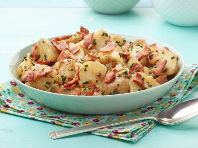

Tarragon Potato Salad

Description
A German classic! Warm potato salad with bacon!
Ingredients
- 2 pounds medium red potatoes, scrubbed and quartered
- Kosher salt
- 8 ounces thick-cut bacon, cut crosswise into 1/2-inch strips
- 1 small yellow onion, diced
- 1/2 cup apple cider vinegar
- 1 tablespoon whole-grain mustard, German-style preferred
- Freshly ground black pepper
- 1 1/2 tablespoons fresh tarragon, finely chopped
Directions
- Place the potatoes in a large pot and fill with cold water to 1-inch above the potatoes. Season the water with 1 tablespoon salt. Bring to a simmer and cook until a knife gently plunges through the potatoes, about 15 minutes.
- Reserve 1/3 cup of the cooking water, drain the potatoes and put back into the pot (off the heat) to keep warm.
- Meanwhile, fry the bacon in a skillet over medium heat until crispy, stirring occasionally. Reserve the bacon and drain all but 1/4 cup bacon fat.
- Add the onions and saute until slightly golden. Add the vinegar and, with a wooden spoon, scrape up any bits from the bottom of the skillet. Add in the reserved cooking water and reduce until it thickens, about 3 minutes.
- Off the heat, whisk in the mustard and season with salt and pepper.
- Add in the potatoes, bacon and tarragon and toss to combine. Adjust the seasoning if necessary.